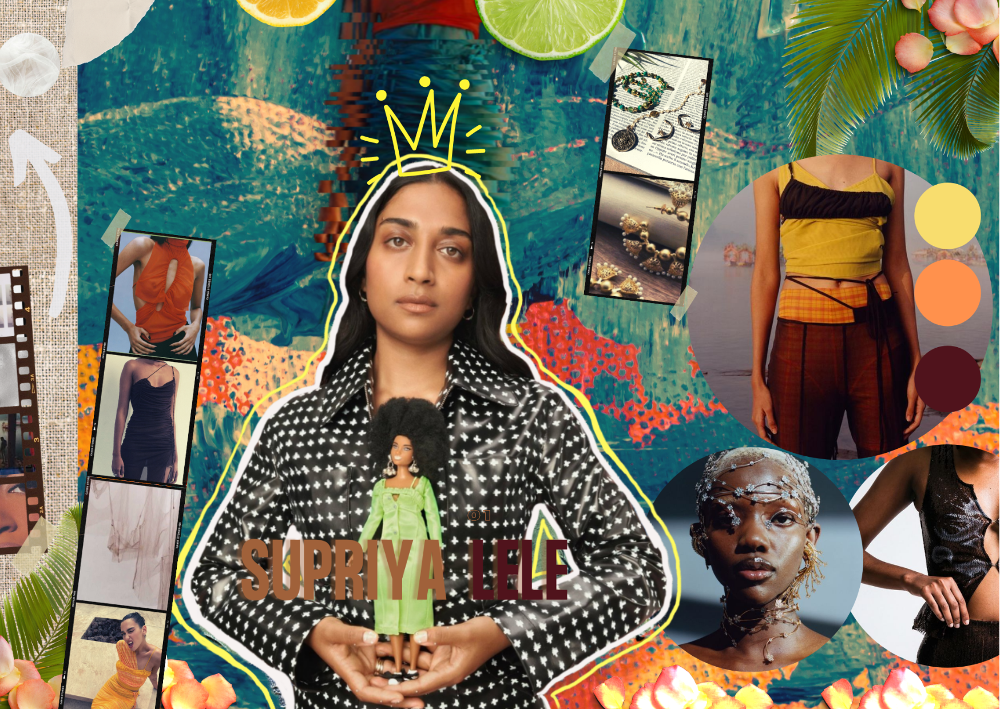
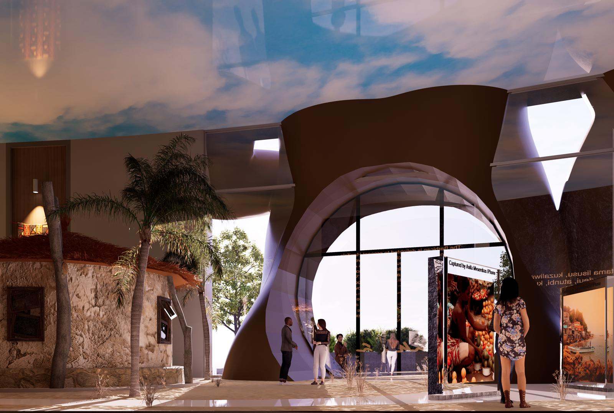
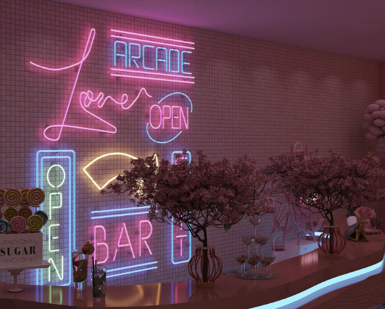

About Me
I'm Estelle Ankrah, a fashion PR and communications graduate from UAL London College of Fashion, where I graduated with First Class Honours. My career sits at the intersection of brand storytelling, stakeholder strategy, and legal thinking — a combination I've been building deliberately, not accidentally.
I've worked across fashion PR agencies, luxury press internships, retail events, compliance-driven roles, and a final year that produced a full exhibition concept for Hanifa at the Barbican. Each experience has taught me something different: how campaigns are built, how crises are managed, how brands are protected, and how people are reached.
I'm currently applying for an LLM in Fashion Law at Queen Mary University of London, deepening my understanding of the legal frameworks (IP, consumer law, sustainability regulation) that shape the industry I've always worked in. The goal is to work at the point where communications meets brand protection — where storytelling meets legal accountability.
I navigate brand reputation. I document with precision. I communicate under pressure.
What I bring
Brand Storytelling
Crafting narratives that position brands with clarity and cultural relevance across press, digital, and experiential channels.
Stakeholder & Media Relations
Managing journalist relationships, influencer partnerships, and cross-functional teams to deliver cohesive brand moments at scale.
Legal & Compliance Thinking
Documentation management, regulatory compliance, and a growing understanding of the legal frameworks that protect brands — IP, consumer law, brand ethics.
Campaign Execution
End-to-end coordination of PR campaigns and brand events, from concept through to production and post-campaign analysis.
Hover any skill to see where it's been applied →
I hold a rare combination of creative communications training and a growing legal foundation. Where most PR professionals see brand crises as narrative problems, I increasingly see them as legal and reputational ones too. I can work across both registers.
I write clearly, I document accurately, and I manage competing stakeholder priorities without losing the thread. These are skills I've developed not in theory but across four years of real, high-stakes retail and media environments.



Education
Queen Mary University of London
LLM Fashion Law · Applying, September 2026
UAL London College of Fashion
BA (Hons) Fashion PR & Communications, First Class Honours
Northgate Sixth Form
A Levels: Law, Media & Psychology · Grades A–C · EPQ B
St Alban's Catholic High School
GCSEs including English & Mathematics · Grades A*–C
Certifications
Tools & Technology
On My Bookshelf
Fashion law, brand strategy, crisis comms, culture. Clickable spines, article links, and a note on why each one matters.